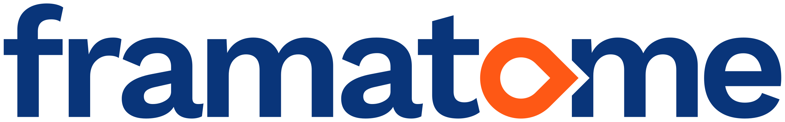
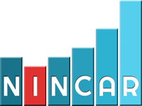
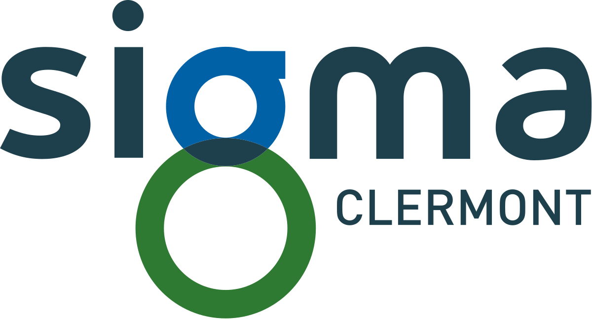
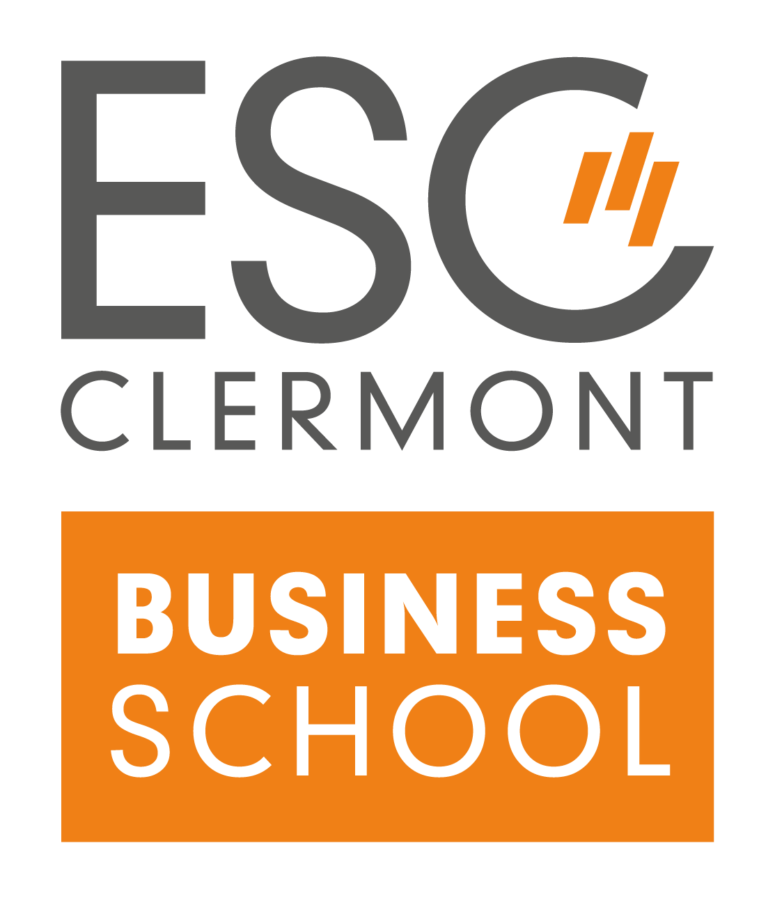

Yvan ROBERT
Ingénieur | Transformation Digitale & Données
Ingénieur de formation, développeur par passion — je cherche à rejoindre La Réunion et à contribuer à sa transformation digitale.
Un profil hybride, au service du terrain
Ingénieur en mécanique avancée diplômé de SIGMA Clermont, avec un double diplôme en Business Development (ESC Clermont), je combine une solide culture terrain avec des compétences en transformation digitale et en développement d'outils adaptés aux besoins métiers.
Chez Framatome, j'ai appris à identifier les frictions dans les processus et à les résoudre par des solutions concrètes : applications Power Apps, tableaux de bord Power BI, automatisations Python, macros Excel — toujours en partant du besoin utilisateur et en prenant en compte les contraintes de l'entreprise.
Développeur web full-stack diplômé (STUDI), j'ai également construit plusieurs applications web de bout en bout, dont StonFlow, une plateforme d'analyse immobilière pour investisseurs.
Originaire de Salazie, je cherche aujourd'hui à rejoindre mon île natale, tout en continuant à apporter mes compétences au groupe EDF.
Ingénieur
SIGMA Clermont, diplômé 2022. Mécanique, analyse de données, gestion de projet industriel.
Data & BI
Power Apps, Power BI, automatisations. Je traduis les besoins opérationnels en outils modernes et concrets.
Développeur
Full-stack diplômé STUDI. React, PHP/Symfony, SQL. Plusieurs applications construites en autonomie.
Réunionnais
Originaire de Salazie 🇷🇪.
Fier de mon île et de ses valeurs.
Parcours professionnel
Ingénieur Qualification Produit/Procédé

Framatome · LyonPilotage des projets de qualification des nouveaux produits et procédés chez les fournisseurs de Framatome. Interface entre les équipes internes, l'ingénierie et les fournisseurs tout au long du cycle de qualification.
- Développement d'une application de suivi et pilotage des qualifications fournisseurs sur Power Apps — conception du MCD, structuration de la base SharePoint, design de l'interface adaptée aux équipes
- Automatisation de la rédaction de courriers fournisseurs via script Python
- Développement d'une macro Excel/VBA pour la conversion automatisée des spécifications Word → Excel
- Pilotage des qualifications via Teams Planificateur (Kanban, relances automatiques), intégré à l'application Power Apps
- Conception de formulaires pour fiabiliser l'acquisition et la vérification des données fournisseurs
Ingénieur Qualité — Quality Events
Traitement des évènements qualité survenus lors de la fabrication des combustibles nucléaires et des grappes. Interface constante avec la qualité usine, l'ingénierie, la supply-chain et l'approvisionnement.
- Migration des indicateurs qualité d'Excel vers Power BI — structuration, modélisation et visualisation des données
- Refonte du fichier de suivi des évènements avec relances mensuelles automatisées par publipostage
- Conception de formulaires pour fiabiliser la collecte et la vérification des informations
- Rédaction de documents contractuels de synthèse (retours d'expérience, dérogations, 8D)
Ingénieur Commercial

Nincar · ChassieuStage puis alternance au sein d'un acteur spécialisé dans la sous-traitance industrielle externalisée, dans le cadre du double diplôme avec l'ESC Clermont.
- Prospection, qualification de leads et gestion de la relation client
- Développement d'un système de prospection automatisée (emailing, salons professionnels)
- Gestion des devis, contrats et commandes
Parcours académique
Développeur Web Full-Stack
STUDI · Formation en ligne
HTML/CSS/JS, PHP/Symfony, SQL/NoSQL, UX/UI Design, principes de développement et organisation des bases de données.

Diplôme d'Ingénieur
SIGMA Clermont · Clermont-Ferrand
Spécialisation en structure et mécanique des matériaux. Calculs de structure, sciences des matériaux, modélisation 3D (CAO/CFAO), automatisme, C++/Matlab.

Double Diplôme — Business Development
ESC Clermont · Clermont-Ferrand
Stratégie commerciale, négociation et marketing. Année de césure en alternance chez Nincar dans le cadre du double diplôme.
CPGE Scientifique PSI
Leconte de Lisle · Saint-Denis de La Réunion
Physique et Sciences de l'Ingénieur. Préparation aux concours des grandes écoles d'ingénieurs.
Baccalauréat Scientifique — Mention Très Bien
Lycée Paul-Moreau · Bras-Panon, La Réunion
Spécialité Sciences de l'Ingénieur.
Domaines d'expertise
Data & Business Intelligence
Automatisation & Outils
Développement Web
Gestion de Projet & Méthodes
Langues
Réalisations
StonFlow
Plateforme de recherche et d'analyse immobilière adressée aux investisseurs. Agrégation de données du marché, outils d'analyse et de comparaison de biens.
Voir le projetEcoride
Plateforme de covoiturage. Mise en relation des conducteurs et passagers.
Krosstream
Application d'agrégation des contenus disponibles en streaming sur toutes les plateformes (Netflix, Amazon, Disney+…). Interface unifiée pour découvrir les films et séries sur toutes les plateformes.
Travaillons ensemble
Je serais ravis de pouvoir mettre à votre disposition mes compétences et mon expériences. N'hésitez pas à me contacter !